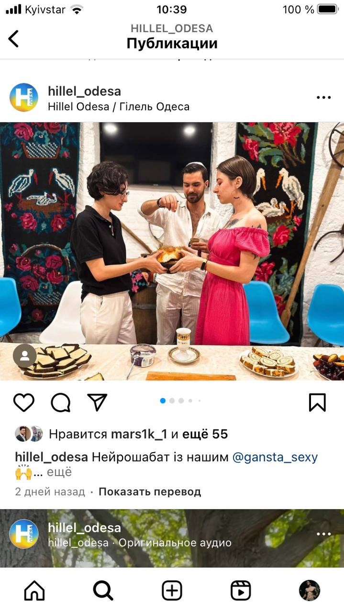

HILLEL ODESSA
Крупнейшая международная еврейская
студенческая организация.
Основная цель «Гилель» — воспитание
нового поколения образованных и
просвещенных евреев, гордящихся
своим наследием.

"Гілель" був створений 1924 року заради благородної
мети - зберегти єврейську цивілізацію, передавши її
до рук майбутніх поколінь. Завдяки завзятій праці
кількох поколінь єврейських студентів "Гілель" виріс
із невеликої організації з офісом у Champaign, штат
Іллінойс у всесвітній рух зі штаб-квартирою у
столиці США. "Гілель" допоміг дітям іммігрантів
знайти своє місце в єврейській громаді Америки,
"Гілель" допоміг студентам подолати прояви
відкритої дискримінації в кампусах університетів,
"Гілель" давав можливість молодим євреям бути
разом із народом Ізраїлю під час тяжких випробувань
та великих перемог, "Гілель" стояв біля витоків і
залишається активним учасником єврейського ренесансу
в країнах колишнього Радянського Союзу, "Гілель"
знаходиться в центрі єврейського життя молоді по
всьому світу. "Гілель" є для хлопців "другим
будинком", місцем, де вони можуть розвиватися
як особи і як євреї.